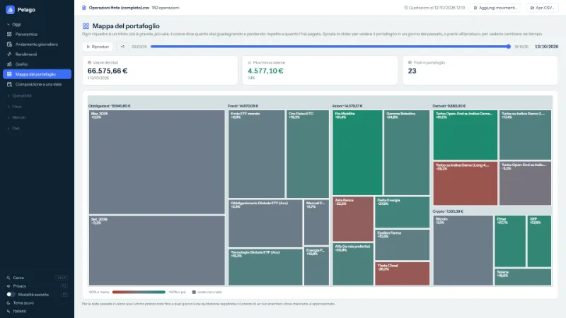
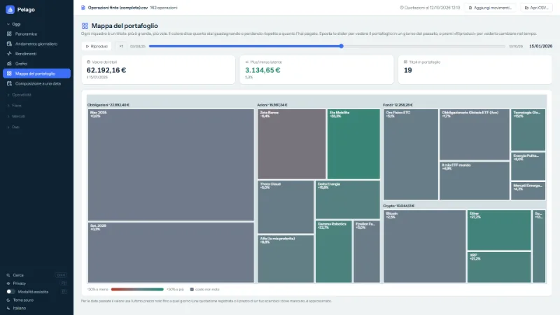
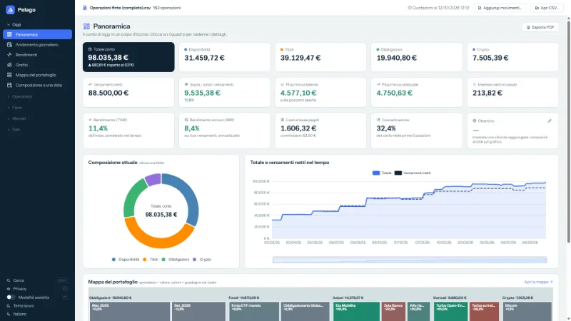
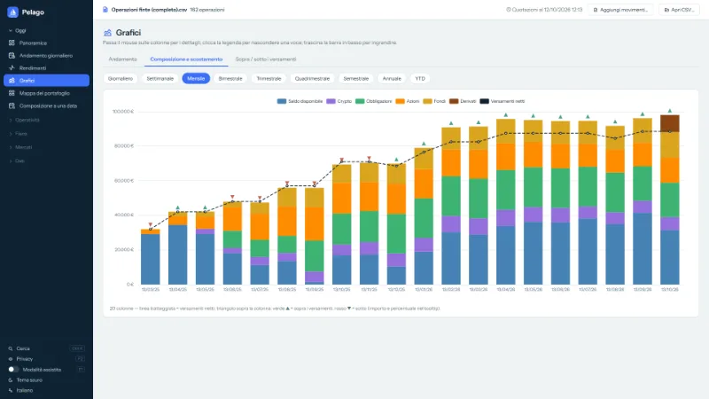
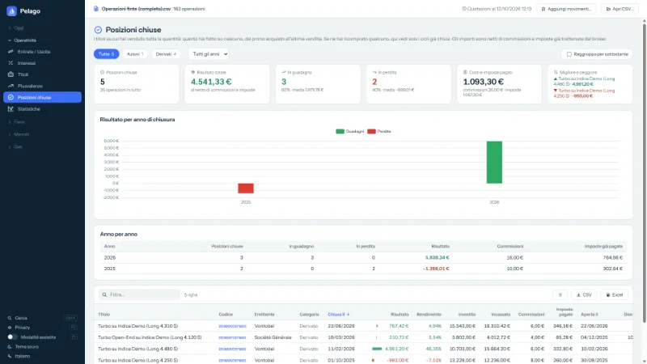
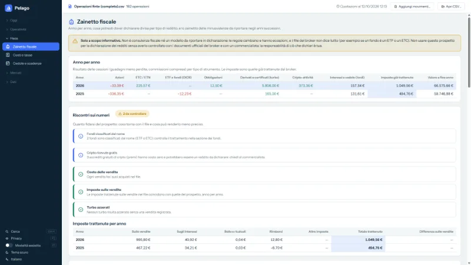
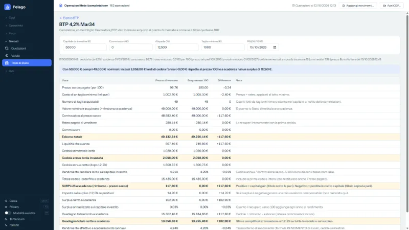
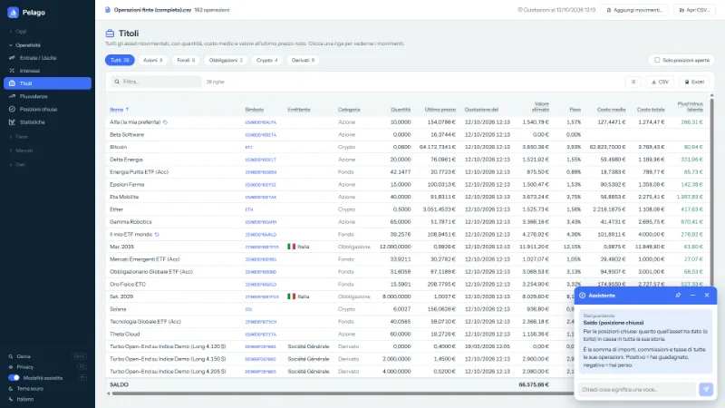
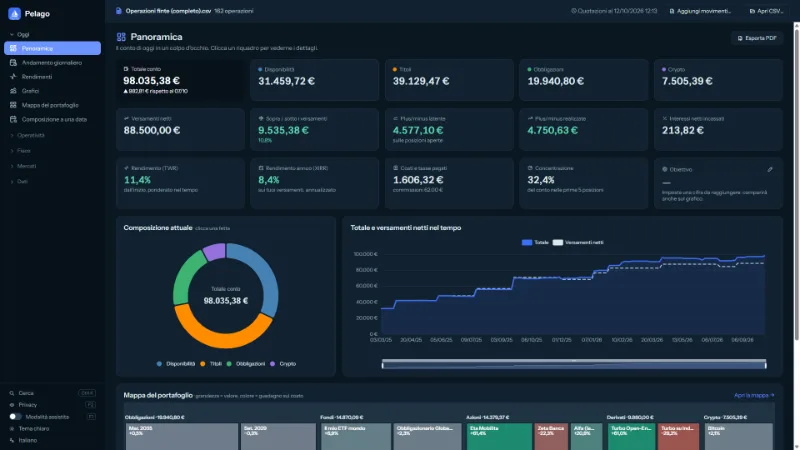

Come è cambiato il tuo portafoglio nel tempo?
Il file CSV di Trade Republic non lo dice. Pelago sì: una mappa a riquadri colorati del tuo portafoglio, con uno slider per tornare a qualsiasi giorno del passato.
Gratis, senza pubblicità, software libero. Tutto resta sul tuo PC.
Cosa fa
Un file CSV, molti modi di leggerlo. Le schermate mostrano un conto di esempio con dati inventati.
-

Mappa del portafoglio
Un riquadro per ogni titolo: più è grande, più vale; il colore dice se guadagni o perdi rispetto al costo.
-

Slider del tempo
Scegli un giorno del passato, oppure premi «Riproduci» e guarda i titoli comparire, crescere e sparire.
-

Panoramica
Totale, categorie, versamenti, rendimenti e costi del conto, in un colpo d'occhio.
-

Grafici
Che cosa c'era nel conto, mese per mese, e se eri sopra o sotto ai versamenti.
-

Posizioni chiuse
Quanto hai guadagnato o perso su ogni titolo venduto, al netto di commissioni e imposte già trattenute.
-

Zainetto fiscale
Un prospetto informativo, anno per anno. Sono stime: non sostituiscono i documenti del broker né un commercialista.
-

BTP e titoli di Stato
Per l'Italia, l'elenco dei BTP a tasso fisso: scegline uno e calcola quanti ne compri, le cedole e il surplus a scadenza.
-

Modalità assistita
Passa il mouse su una colonna o su un numero: Pelago spiega che cos'è e come è calcolato.
-

Cinque lingue, tema chiaro e scuro
Italiano, inglese, francese, tedesco e spagnolo. Il tuo CSV non viene mai modificato; il backup locale è a un clic.


Come si usa
Scarica il CSV
Dal tuo account Trade Republic, esporta il file CSV delle transazioni.
Scarica Pelago
Prendi
pelago.exedall'ultima versione e avvialo: è un singolo file, senza installazione.Apri il CSV
Premi «Apri CSV» e scegli il file. Il tuo CSV non viene mai modificato.
Servono Windows 10 o 11 a 64 bit e il WebView2 Runtime, già presente in Windows 11 e nella maggior parte dei Windows 10 aggiornati.
Vuoi provarla senza i tuoi dati?
Avvia Pelago senza aprire nessun file e premi «Prova con un conto di esempio»: si apre una seconda finestra con un conto inventato (circa 160 operazioni), in una cartella temporanea che sparisce alla chiusura. Se preferisci, scarica il CSV di esempio e aprilo con «Apri CSV».
Che cosa esce dal tuo PC
- Il tuo CSV e i tuoi dati restano sul PC. Pelago non chiede login né password e non si collega al tuo conto.
- Per i prezzi consulta servizi pubblici (Yahoo Finance, CoinGecko, BCE, Borsa Italiana e pochi altri) e invia solo codici di titoli e date: mai importi, quantità o dati personali.
- I prezzi dei derivati (Vontobel e Société Générale) sono spenti di default: li attivi tu, dalla pagina Quotazioni.
- Il codice è pubblico: puoi controllare tu stesso che non ci sia altro.
Verificala tu
- Il codice è pubblico (GPL-3.0): puoi leggerlo, compilarlo da solo e vedere che cosa fa.
-
Ogni versione riporta l'impronta SHA-256 di
pelago.exe. Dopo il download, in PowerShell:Get-FileHash .\pelago.exe -Algorithm SHA256Confronta il risultato con il file
pelago.exe.sha256della stessa versione. - L'eseguibile non è firmato digitalmente: la prima volta Windows può mostrare l'avviso SmartScreen («Windows ha protetto il PC»). Non lo nascondiamo: se preferisci, compila Pelago dal sorgente.
Domande frequenti
Pelago è ufficiale o collegata a Trade Republic?
No. È un progetto personale e non ufficiale: non è affiliato né approvato da Trade Republic e non ha alcun accesso al tuo conto.
Quanto costa?
Niente. È gratuita, senza pubblicità e senza scopo di lucro: software libero (GPL-3.0).
I numeri sono precisi?
Sono stime calcolate dal file: non sono un saldo ufficiale. I prezzi arrivano da servizi pubblici e possono essere in ritardo o mancare.
Posso usarla per la dichiarazione dei redditi?
Non come unica fonte. I prospetti fiscali sono stime informative, con formule semplificate: controllali con i documenti ufficiali del tuo broker e con un commercialista. La responsabilità di ciò che dichiari è tua.
Funziona con altri broker, o su Mac e Linux?
È pensata per il CSV di Trade Republic: con i file di altri broker non c'è alcuna garanzia. Per ora funziona solo su Windows 10/11 a 64 bit.
Come la disinstallo?
Cancella pelago.exe: non scrive nel registro e non si avvia con il computer. Per togliere anche i dati, cancella la cartella %LOCALAPPDATA%\Pelago e, se li hai attivati, i backup in Documenti\Pelago backup.
Ho trovato un errore o ho un'idea: come lo segnalo?
Apri una segnalazione su GitHub o scrivi a pelago_claude@gmail.com. Non allegare mai il tuo CSV vero: contiene tutte le tue operazioni.
Avvertenze e responsabilità
Pelago calcola valori, rendimenti e prospetti fiscali a partire dal file CSV che gli fornisci, con formule semplificate: sono stime, possono contenere errori o non tenere conto di tutti i casi (formati diversi, operazioni societarie, regime fiscale, imposte estere). Non sono un saldo ufficiale, né consulenza finanziaria, legale o fiscale, e non sostituiscono i documenti ufficiali del tuo broker né un professionista: verifica sempre i numeri prima di usarli, in particolare per la dichiarazione dei redditi. Pelago è fornito «così com'è», senza garanzie di alcun tipo (GPL-3.0, art. 15-16): nei limiti consentiti dalla legge, l'autore non risponde dei danni derivanti dall'uso del programma o dei suoi risultati.